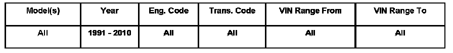

Airbag - Deployed Airbag Repair
ConditionDeployed Airbag, Repair WARNING!
Some companies advertise their ability to repair airbags or offer rebuilt airbags.

69 06 10 Dec. 6, 2006 2002011 Supersedes T.B. Group 69 number 02-02 dated Feb.15, 2002 due to additional model years and inclusion into ElsaWeb.
Technical Background
Instruction for deployed or installation of airbags.
Production Solution
No production change required.
Service
Volkswagen of America, Inc.(VWoA) would like to make very clear that once an airbag has deployed or has been deployed, then that airbag must never be used again.
NOTE:
ACCORDINGLY, A DEPLOYED AIRBAG MUST NEVER BE REPAIRED.
WARNING:
DO NOT, under any circumstances, install Airbags or Airbag components which have been repaired or rebuilt!
ALWAYS REPLACE airbags and airbag components that have been consumed or stressed in a deployment with new replacement parts most recently specified in the VWoA Parts Information System.
Tip:
Always see ETKA for the latest part(s) information.
Repairing airbags or replacing airbag systems or components of the airbag system with used parts or with parts other than specified by VWoA, is dangerous for the following reasons:
- Airbag material can be damaged in ways that may not be evident during inspection
- Stretched tethers may not perform the same when redeployed
- Pyrotechnics can weaken the metal parts during burn out and damage the wiring
- Folding patterns have a large influence on airbag performance, including the airbag's ability to help protect occupants.The repackaging and folding of the airbag cannot be done in the same way with the same precision as it can be by the airbag supplier, who has special machinery designed for that special purpose.
- Refolding an airbag by hand and not in strict compliance with original specifications will not permit the airbag to deploy in precisely the manner in which it was designed.
- Even small differences in deployment time or sequence can cause serious injuries or death to vehicle occupants.These shortcomings in repaired, rebuilt or previously used airbags might not become apparent until a future deployment, at which point it obviously is too late.
Since the risk of using any airbag other than original equipment replacement parts is so great, Volkswagen of America, Inc.can not and will not accept responsibility for the consequences.Therefore, we will not under any circumstance defend or indemnify any dealer against claims arising from the usage of repaired, rebuilt or previously used airbags and/or components.
Let us also remind you once again that, when deploying any airbag for disposal purposes, you should follow the instructions provided to you in our Instruction Booklet J-44210.
Warranty
Information only.
Required Parts and Tools
No Special Parts required.Always see ETKA for the latest part(s) information.
No Special Tools required.